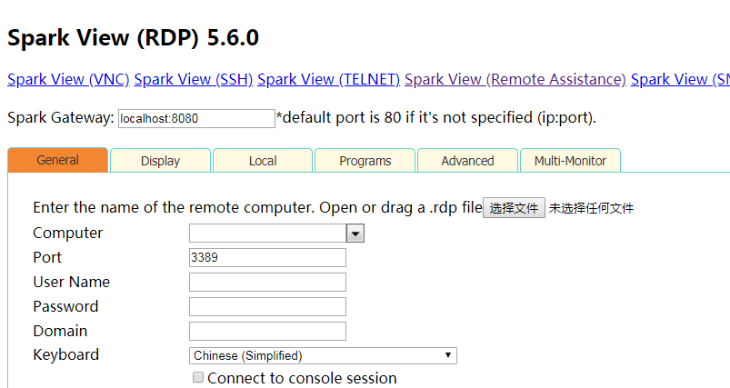

因为有从网页直接远程其他windows电脑的需求，于是通过网上搜索找到下面几个解决方案，分享一下：
1.windows的远程桌面web连接tsweb
下载地址https://www.microsoft.com/ZH-cn/download/details.aspx?id=14531，需要iis，老win系统都能用，据说微软出了新版的，但是好像要winserver2016才能用，没去研究。
优点：微软官方出品，体积小，几百k而已，使用上和直接mstsc没啥区别。
缺点：需要调用activex控件。
2.guacamole
html5的远程web应用，支持rdp，vnc，ssh，适用范围更广，网上也能受到不少文章教程；
问题是没有windows版本，对我们linux小白太不友好了，需要各种配置、依赖等，用docker安装会容易些，但是尝试了下，在腾讯云1G内存下，docker安装后内存直接就从200M左右升到700多M，也可能是我不懂配置，总之使用门槛还是高了，不适合新手。
3.remote spark的spark gateway
官网：http://remotespark.com/html5.html
体积小，就20多m，windows下一键安装，直接启动，直接使用，支持rdp，ssh等，占用内存也小，不到100m，使用上也很简单方便，不知道为什么网上基本找不到相关文章，应对基本需求完全足够了，不需要折腾。
